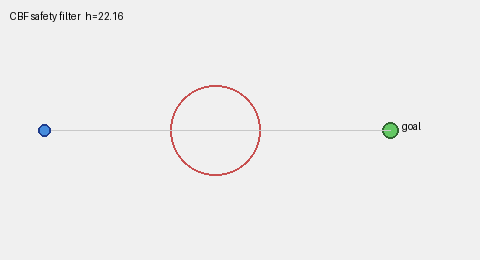

A learned policy can produce almost any output — you cannot enumerate every behavior it will ever exhibit. Control barrier functions, reachability analysis, conformal prediction, runtime monitors, and uncertainty quantification each answer the same question from a different angle: how do you make a promise about a system you cannot fully enumerate? From first principles, drawn live, grounded in the ICRA / IROS / CoRL / RSS and CVPR 2026 corpora.
Five ideas, each a live diagram then plain words — why safety is hard for learned systems, the CBF filter, reachability, calibrated uncertainty, and runtime monitoring. Each has a ‘the actual math’ toggle.
Lyapunov functions prove asymptotic stability without solving the differential equation — the conceptual ancestor of all safety certificates.
H∞ and minimax control guarantee performance bounds despite worst-case model mismatch — formal safety for linear systems.
Mitchell, Tomlin et al. compute reach-avoid sets via HJ PDEs — exact safety certificates for nonlinear systems in low dimensions.
Shafer & Vovk formalize conformal prediction (2005); Ames et al. develop control barrier functions for nonlinear safety (2014–19).
Lagrangian and primal-dual methods bring cost constraints into RL — policy optimization that respects safety budgets during training.
OOD monitors, conformal planning, and neural reachability scale safety tools to high-dimensional perception-to-action pipelines.
Classical controllers — PID, model predictive control, hand-designed state machines — have explicit, bounded behaviors. You can inspect the code, bound the outputs, and prove that under certain conditions the system stays within safe limits. Safety is a property of the design, not an empirical hope.
A learned policy trained with reinforcement learning or imitation has a parameter space with millions of degrees of freedom. It generalizes beyond training data in ways its designers did not anticipate. That generalization is precisely its value — and precisely the problem. The field of safety, guarantees, and formal methods exists to close the gap between a policy that usually works and one that provably works.
A learned policy π: S → A maps any state to an action. The set of behaviors it can produce is not enumerable for large π — no finite test can certify safety.
Classical safety: prove ∀x∈X, ∀d∈D: f(x,π(x),d) ∈ Xsafe. With a black-box neural π this is undecidable in general.
The key insight is separation: the policy can be learned any way you like — reinforcement learning, imitation, a neural network — without worrying about safety. Safety is enforced by a separate layer downstream. The filter corrects the action, not the policy weights.
A CBF h(x) is a scalar function where h(x) ≥ 0 defines the safe region. The safety condition is: the time-derivative &huml;h(x) must stay non-negative — the state cannot drift out. This translates into a quadratic program (QP) that minimally modifies the policy command to satisfy the constraint. The correction is zero when the policy is already safe; it activates only near the boundary.
CBF condition: for h(x) ≥ 0 as the safe set, require ˙h(x) ≥ −α·h(x) — a class-K function α prevents escape.
Safety QP: u* = argmin ||u − unom||² s.t. Lfh + Lgh·u ≥ −αh(x) — minimal correction to policy command.
If the QP is feasible, the filtered action guarantees h(x(t)) ≥ 0 for all t ≥ 0 — no escape from the safe set.
The Hamilton-Jacobi reachability framework encodes this as a partial differential equation. The value function V(x,t) gives the minimum distance to the hazard over all possible futures from state x at time t. When V(x,t) crosses zero, a bad future is reachable — that is the safety boundary.
Because reachability works over all possible disturbances — worst-case — its guarantees are hard: no matter what happens, the system will not enter the danger set. The cost is compute: solving a Hamilton-Jacobi PDE exactly is tractable only in low-dimensional state spaces. Recent work extends it to black-box and high-dimensional systems via neural function approximators.
Hamilton-Jacobi value function: V(x,t) = minu maxd mins∈[t,T] l(x(s)) where l(x)<0 marks the failure set.
Safety boundary: V(x,0) = 0 — states where a bad future is just barely avoidable; negative V means inevitable failure.
PDE: ∂V/∂t + minu maxd ∇V·f(x,u,d) = 0 with terminal V(x,T) = l(x).
The two kinds of uncertainty are different. Aleatoric uncertainty is irreducible noise in the world — sensor quantization, weather, occlusion. Epistemic uncertainty is ignorance in the model — it has not seen enough data near the current state. Only epistemic uncertainty shrinks with more training. Conformal prediction wraps any black-box predictor in a coverage-guaranteed interval without assuming normality or any specific model structure.
The coverage guarantee is: P(y ∈ C(x)) ≥ 1 − α where α is a chosen error rate, and this holds for any test distribution that matches the calibration distribution. The system uses uncertainty to widen action margins near unfamiliar states — slowing down, requesting human confirmation, or handing off to a fallback.
Conformal coverage: P(y ∈ C(x)) ≥ 1 − α for any distribution matching calibration — distribution-free, finite-sample.
Nonconformity score s(x,y); threshold τ = quantile(1−α)(1+1/n) of calibration scores; prediction set C(x) = {y : s(x,y) ≤ τ}.
The fallback controller does not need to be optimal — it needs to be safe. A freeze command, a return-to-home trajectory, or a reduced-speed reactive planner can all serve as fallbacks. The design question is: at what signal should the switch happen, and how do you ensure the handoff itself is safe?
In autonomous vehicles this pattern is called the safety architecture: perception monitors flag degraded inputs, prediction monitors flag divergence from expected agent behavior, and a behavioral safe-stop sequence engages when either fires. The same structure appears in surgical robots, industrial arms, and legged locomotion. The monitor is the last line before a human must intervene.
OOD score δ(x) (e.g. Mahalanobis distance or energy score); trigger fallback when δ(x) > τmonitor.
Safe handoff: the fallback usafe must itself satisfy CBF constraints — the switch is only safe if the fallback keeps the system in the safe set.

What each approach guarantees, how conservative it is, what it assumes, and what it costs.
| Guarantee type | Conservatism | Assumptions needed | Compute cost | |
|---|---|---|---|---|
| Empirical testing | probabilistic (no bound on unseen) | none — unconstrained | representative test distribution | low to high (millions of sim hours) |
| Control barrier function (CBF) | hard set invariance | low — minimal correction | known or learned dynamics, feasible QP | low — one QP per step |
| Hamilton-Jacobi reachability | hard reach-avoid certificate | high — worst-case disturbances | known dynamics, tractable PDE dimension | very high — offline PDE solve |
| Conformal prediction | distribution-free coverage (1-α) | proportional to calibration data | i.i.d. or exchangeable calibration set | low — sort scores, one threshold |
Every family below leans on one or more of these — the recurring reasons to add a formal safety layer on top of a learned system.
A CBF or reachability certificate says the robot mathematically cannot leave the safe set under the given assumptions — not that it rarely does. That distinction matters for certification.
The safety filter is decoupled from the learned policy. You can swap, retrain, or update the policy without re-proving safety; the filter handles it.
Conformal prediction and uncertainty-aware planning widen margins proportionally to model uncertainty — acting cautiously only when and where needed, not everywhere.
Runtime monitors and fallback controllers mean a partial failure produces a controlled stop or reduced-capability mode, not a crash or uncontrolled motion.
Conformal prediction wraps any black-box predictor — a neural network, a VLM, a depth estimator — in a coverage guarantee without assuming anything about its internals.
Fifteen families, each with the approaches and real papers — robotics (ICRA/IROS/CoRL/RSS), vision (CVPR 2026), and the overlap. Jump to any:
A learned controller can command any output — it has no built-in awareness of physical limits. The safety filter must intercept that command and find the closest action that keeps the system inside a mathematically defined safe region, without retraining the policy.
A control barrier function h(x) carves the state space into safe (h ≥ 0) and unsafe (h < 0) regions. The safety filter solves a small convex program at every control tick to find the minimal correction that keeps the state drifting toward — never away from — the safe interior.
The decoupling is the real benefit: the learned policy can be trained without any knowledge of the safety constraint. Switching from one task to another with different geometry only requires changing h(x), not retraining.
Testing a robot by simulation samples a tiny fraction of state space. Formal reachability asks the dual question: compute the set of ALL states reachable in the next T seconds and verify that none of them intersect the failure set.
Hamilton-Jacobi reachability computes reach-avoid sets by solving a PDE backward in time from the failure set. The value function V(x) tells you whether any worst-case future trajectory can hit the hazard from state x — not whether the current plan does, but whether any plan does.
Neural network approximations of V reduce the dimensionality curse: a small network represents V over continuous high-dimensional state spaces without a grid, making HJ reachability applicable to robot arms, drones, and vehicles.
Standard RL maximizes cumulative reward with no concept of constraint. A policy trained this way will violate safety constraints whenever doing so yields reward — during training and after. Safe RL integrates constraint satisfaction into the optimization from the start.
Constrained MDPs add a cost function alongside the reward. The Lagrangian relaxation turns the constrained optimization into an unconstrained one with a penalty multiplier λ that auto-adjusts to enforce the budget. Adaptive conformal prediction can tighten the safety margin dynamically based on prediction uncertainty.
Safe RL is not the same as a safety filter. Safe RL bakes constraint awareness into the policy weights — the policy learns to avoid dangerous states. A safety filter guarantees constraints even if the policy ignores them. Both layers together give the strongest guarantees.
No matter how carefully a policy was trained, the world will eventually present a state outside its training distribution. At that moment the policy's output is unreliable. A runtime monitor detects this divergence and hands off to a trusted, conservative controller before harm occurs.
Runtime monitors observe the live system state — perception outputs, prediction errors, actuator responses — and flag when something looks wrong. The flag can be soft (log a warning, widen margins) or hard (freeze, hand to fallback).
Recovery policies handle the aftermath: fall-detection and stand-up for legged robots, rich language-guided failure descriptions for imitation-learning policies, or a return-to-home flight path for UAVs. The monitor and recovery together form a second feedback loop above the primary controller.
Point-estimate predictions give no signal about when to trust them. A depth estimate 2.3 m away is treated identically whether the sensor has seen thousands of similar scenes or is extrapolating to a completely new texture. Uncertainty quantification makes that difference explicit and actionable.
Bayesian methods (Gaussian processes, Bayesian neural networks, deep ensembles) quantify epistemic uncertainty by maintaining a distribution over model parameters. The predictive variance grows wherever training data is sparse — exactly the states where caution is warranted.
Aleatoric uncertainty (irreducible noise) and epistemic uncertainty (model ignorance) are meaningfully different: only the second shrinks with more data. Separating them lets the planner widen margins only where new data would help, not everywhere.
A learned sensor or perception module trained on one distribution will confidently output wrong answers on another, with no internal signal that anything is wrong. OOD detection adds that signal: flag inputs whose features differ from training distribution and suppress or discount the model output.
OOD detection methods measure how far a test input is from the training distribution using energy scores, Mahalanobis distance, or the maximum softmax response. The key insight is that overconfident outputs on OOD data are a consequence of the training objective — cross-entropy does not penalize confidence on unseen inputs.
Anomaly detection in industrial inspection, off-road traversability, and video surveillance all share the same primitive: model the normal distribution at training time, then flag deviations. Foundation models have made zero-shot anomaly detection practical by providing rich generic features without task-specific annotation.
Empirical testing samples a finite set of scenarios. Formal verification checks all scenarios exhaustively via logical deduction, turning a simulation-based argument into a proof. For safety-critical systems this matters: a single counterexample is sufficient to invalidate the design.
Formal methods use mathematical logic to prove properties rather than test them. Signal temporal logic (STL) expresses safety constraints over time horizons; SAT/SMT solvers check whether a plan satisfies them. Neural network verification tools extend this to learned components.
The gap between formal and learned is shrinking: neural network reachability verifies properties of networks by computing tight input-output bounds; conformal risk control gives distribution-free probabilistic certificates without requiring a formal model at all.
Standard behavior cloning collects demonstrations from an expert, then trains a policy to mimic them. Safety-critical states are rare in demonstrations — and exactly where the clone is most likely to fail. Safe imitation augments the training signal to cover those states without requiring the expert to perform dangerous maneuvers.
Safe imitation learning addresses the data coverage problem: expert demonstrations cluster around smooth nominal behaviors and rarely visit the constraint boundary. If the clone extrapolates to those boundary states, it has nothing to imitate and produces unsafe actions.
Two solutions: augment the dataset with synthetic near-constraint transitions (counterfactual or potential-field-guided), or use reachability to compute where the safety boundary lies and collect demonstrations near it. Both shift the training distribution toward the states that matter most for safety.
A trajectory that looks collision-free in the planner may not account for the robot's own geometry: the arm has a volume, the drone has rotors, the path planner must keep every part of the body away from every obstacle at every instant, not just the center of mass.
Collision avoidance is the most direct form of geometric safety: maintain a minimum clearance between the robot body and all obstacles at all times. The challenge is computing this efficiently for complex robot geometries and dense point clouds at control rates.
Sensor fusion — combining LiDAR, camera depth, and radar — increases the probability that every obstacle is detected. Multi-sensory data fusion, vision-based reactive controllers, and motion primitives for hazard avoidance each address a different point in the perception-to-planning pipeline.
Worst-case safety is often too conservative: treating every disturbance as worst-case means never approaching any situation with uncertainty. Risk-aware planning accepts a bounded probability of constraint violation and uses that budget to make less conservative, more efficient decisions.
Risk-aware planning replaces worst-case constraints with probabilistic ones: instead of requiring zero violations, specify a probability budget and let the planner spend it where the gain is largest. The result is less conservative plans that still carry a formal bound.
Chance constraints, conditional value-at-risk (CVaR), and risk-bounded graph search all operationalize this idea. The key is a good model of the uncertainty distribution — a mismatch between the assumed distribution and reality can invalidate the risk certificate.
Bayesian methods give calibrated uncertainty only if the model and prior are correct. In practice both are misspecified. Conformal prediction provides coverage guarantees from first principles: given any black-box predictor and exchangeable calibration data, the prediction set will contain the true answer at rate 1-α — with no model assumptions.
The conformal prediction framework needs only: a score function that measures how well a prediction matches the true output, and a calibration set exchangeable with the test distribution. The resulting prediction sets are guaranteed to contain the true answer with probability at least 1 − α regardless of how the predictor was built.
In robotics this enables wrapping a learned planner, a depth estimator, or a grasp-quality predictor in a coverage guarantee. In vision, conformal risk control extends coverage to tail-risk (CVaR) metrics, and compositional conformal prediction stacks guarantees through multi-step pipelines node by node.
A small, imperceptible change to an image can flip a classifier's output with high confidence. These perturbations are not random noise — they are computed by following the loss gradient in input space. A certified defense must bound the set of perturbations that can change the prediction.
Adversarial perturbations are not a quirk of specific models — they emerge from the geometry of high-dimensional decision boundaries. Any linear-enough classifier in high dimensions can be fooled by gradient-guided perturbations too small for a human to see.
Certified defenses produce a formal guarantee: for perturbations within a given radius, the classifier is correct. Randomized smoothing, interval-bound propagation, and dual-certificate verification methods each compute that radius differently. Dual-certificate methods are the most complete: they verify the full reachable-set of perturbed inputs without sampling.
A model that outputs confidence 0.95 should be correct 95% of the time. Most deep neural networks are miscalibrated: overconfident on easy inputs and underconfident on hard ones. A miscalibrated detector used for safety decisions produces margins that are either too tight or too loose.
Calibration measures alignment between predicted confidence and true accuracy. A well-calibrated model is not necessarily more accurate — but its confidence scores are meaningful, so downstream safety systems can use them to set margins.
Temperature scaling is the simplest post-hoc calibration: divide logits by a scalar T found on a calibration set. More expressive calibrators (Platt scaling, isotonic regression, normalizing flows) handle multi-class and detection settings where confidence is per-class and per-box.
A vision-language model confidently describes objects not present in the image — 'hallucinating' tokens that have no visual grounding. In a robot that uses a VLM for scene understanding or task planning, a hallucinated object can cause the arm to move to a location that is empty, or a vehicle to brake for an obstacle that does not exist.
Hallucinations in VLMs arise because the language model head is trained to produce fluent, plausible text — and sometimes plausibility wins over visual evidence. The model generates tokens because they are likely given the context, not because the image supports them.
Detection approaches trace the token back to its visual evidence: attention scores, contrastive counterfactuals, or Lyapunov stability probes on the hidden-state trajectory. Mitigation approaches steer generation toward better-grounded tokens by boosting the logit contribution of the first visual token or filtering via contrastive decoding.
A model trained on sunny highway images will degrade when deployed in fog, rain, or night. Retraining from scratch requires source data and labels. Test-time adaptation updates model parameters using only unlabeled test data — the model adapts to the new distribution without any supervised signal.
Test-time adaptation closes the gap between training and deployment distributions by updating model statistics or parameters using test data alone. Batch normalization statistics update for free; entropy minimization optimizes the model to be less confused about test inputs.
The safety concern for TTA is regression: updating on bad test batches can collapse model performance rather than improve it. Neural-collapse geometry provides a principled stopping criterion — when the feature structure deviates from the trained collapse structure, adaptation has gone too far.
ROBO ICRA/IROS 2025 · CoRL/RSS 2024 CVPR CVPR 2026 BOTH the seam — titles are real, from the analyzed corpora.
Safety and formal methods are closing in on learned systems — and several fundamental questions remain genuinely open: